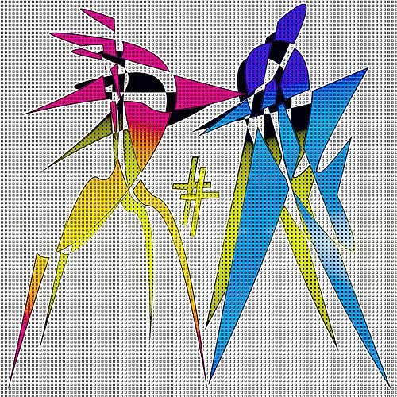

Gerhard Scholz
Duel 08
 |
|
|
|
(1 of 11) |
 |
|
|
|
(1 of 11) |
Gerhard Scholz ( RoKu )
born 1950, Hoya/Weser, Niedersachsen, Germany
education in aircraft construction, VFW-Fokker, Bremen
study of technology of synthetic material, University Darmstadt
engineer for organisation of work, Michelin Karlsruhe
flight engineer, Lufthansa Airline
captain, Lufthansa Airline
retired 2004
2006 Honorable Mention, Sept. Contest, MOCA
2007 Third Prize, Oct. Contest, MOCA
living part time in Gross-Umstadt, Germany and Bali, Indonesia with my wife HendawatyStatement
Inspired by photography and contemporary art during my time traveling and working for Lufthansa Airline, I started with computer art in 2000, self-educated, using photography software and painting software as well as my stock of photographs. I´m strongly influenced by pop-, op- and concrete art.